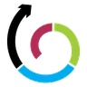
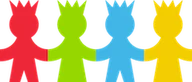
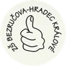
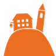
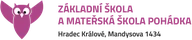
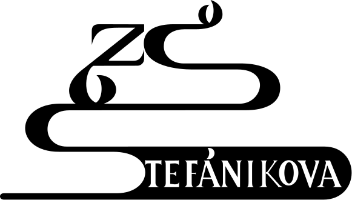
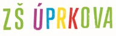

Jídelníček tvojí jídelny
Co se vaří dnes i v dalších dnech, přímo z veřejného jídelníčku na Strava.cz.
Pro ZŠ, SŠ a VOŠ v Hradci Králové. Zdarma, bez reklam.
Rozvrh tvojí třídy se suplováním. Co je k obědu a kdy je v jídelně nejmíň lidí. Volné učebny, kdo kdy končí a kam to stihneš o pauze. Stačí e-mail, školní heslo nepotřebuješ.
Jakýkoli. Školní, osobní, rodičů. Heslo si nevymýšlíš.
Na e-mail přijde 6místný kód. Žádné heslo, žádné ověřování přes školu.
A klidně i skupiny, třeba jazyk nebo seminář. Rozvrh máš hned.
Co umí
Rozvrh, oběd, volná hodina, cesta po městě. Jedna appka pro hradecké školy, postavená jen z toho, co školy samy zveřejňují.
Otevřeš appku a víš, kde máš být. Karta Teď ukazuje běžící hodinu s odpočtem, Další kam jdeš potom. Pod tím celý den tvojí třídy.
Suplování se často dopisuje večer nebo ráno před první hodinou. OpenŠtudent hlídá rozvrh tvojí třídy a pošle notifikaci, jen když se změní něco u tebe.
Jídelna
Do Jídelny Hradecká chodí na oběd studenti z mnoha škol najednou. OpenŠtudent zná rozvrhy všech, kdo tam jedí, a spočítá, kdy se tam nahrnou. Ty přijdeš, až bude volno.
Co se vaří dnes i v dalších dnech, přímo z veřejného jídelníčku na Strava.cz.
Propoj svůj účet Strava.cz a oběd objednáš, změníš nebo odhlásíš v appce. Přihlášení zůstává jen u tebe v zařízení.
Nikoho nepočítáme. Křivka vychází z toho, kdy kterým třídám končí hodiny a jak daleko to mají do jídelny.
Appka zná rozvrhy škol po celém Hradci. Uvidíš, kdy která třída končí, a domluvíte se bez psaní „kdy máš konec?“.
Kafe, knihovna, obchod, nebo prostě ven. SideQuesty spočítají cestu po Hradci MHD, nextbikem nebo pěšky a řeknou, jestli to stihneš před školou, o pauze, nebo až po škole.
Kam si sednout ve volné hodině. Appka vezme učebny z rozvrhu celé školy a odečte ty, kde se zrovna učí.
Potřebuješ zastihnout učitele? Napíšeš zkratku, vybereš hodinu a víš, ve které učebně ho najdeš.
Někdo přidá test a vidí ho celá třída. Objeví se i u hodiny v rozvrhu.
iPhone, Android i počítač. Přidáš si ji na plochu, žádný obchod s aplikacemi.
Žádné předplatné, žádné bannery. Zdrojový kód je veřejně na GitHubu.
Školy
OpenŠtudent umí každou školu v Hradci Králové, která zveřejňuje rozvrh bez přihlášení. V Bakalářích, EduPage nebo KybernaIS. Najdi tu svoji.









Tyhle školy rozvrh na webu nemají, nebo jen po přihlášení. OpenŠtudent se do školních systémů nepřihlašuje, takže je zatím neumí. Jakmile škola veřejný rozvrh zapne, objeví se tu. Vysoké školy přibudou později.
Soukromí
Appka nepotřebuje tvoje školní heslo, a tak ho ani nemá. Ví jen to, co jí řekneš, aby ti ukázala správný rozvrh.
Server si pamatuje jen tohle. Případně tvoje skupiny a přezdívku, když si ji nastavíš.
Jen to, co škola sama ukazuje všem. Do Bakalářů ani EduPage se nikdo za tebe nepřihlašuje.
Známky, absence ani nic dalšího za školním přihlášením appka nevidí. A nechce.
Přihlášení ke Strava.cz je jen v zašifrované cookie ve tvém zařízení. Na serveru uložené není.
Instalace
OpenŠtudent je webová aplikace. Otevřeš ji v prohlížeči a přidáš si ji na plochu. Pak se spouští z ikony přes celou obrazovku, posílá notifikace a aktualizuje se sama.
Na iPhonu to musí být Safari. Klepni na Otevřít aplikaci.
Čtvereček se šipkou nahoru, dole na liště (na iPadu nahoře).
Sjeď v nabídce níž, vyber „Přidat na plochu“ a potvrď „Přidat“.
Notifikace na iPhonu fungují jen takhle z plochy, od iOS 16.4. Zapneš je v appce.
Klepni na Otevřít aplikaci.
Tři tečky vpravo nahoře.
Vyber „Nainstalovat aplikaci“ nebo „Přidat na plochu“ a potvrď.
Appka se zeptá sama. Povol je a o suplování se dozvíš hned.
V Chromu, Edgi nebo Safari. Klepni na Otevřít aplikaci.
V Chromu a Edgi ikona instalace vpravo v adresním řádku. Funguje i jako obyčejný panel.
Na velké obrazovce vidíš rozvrh na pět dní vedle sebe.
Kdo ji používá
Kolik lidí OpenŠtudent má a ze kterých škol.
Jen souhrnné počty po školách. Žádná jména, žádné e-maily.
Časté otázky
Školní appka pro celý Hradec Králové. Ukáže rozvrh tvojí třídy se suplováním a odpadlými hodinami, pošle notifikaci, když škola rozvrh změní, a řekne, co je k obědu a kdy bude v jídelně nejmíň lidí. Umí i volné učebny, kdo kde učí, kdo kdy končí, testy sdílené se třídou a SideQuesty po Hradci. Pro 2. stupeň ZŠ, střední školy a VOŠ.
Pokud tvoje škola zveřejňuje rozvrh bez přihlášení (v Bakalářích, EduPage nebo KybernaIS), tak ano. Teď to jsou desítky hradeckých základních a středních škol, celý seznam je výš na stránce. Když škola rozvrh veřejně nemá, appka ho nezná. Jakmile ho zveřejní, objeví se tu. Vysoké školy přibudou později.
Ne. Zaregistruješ se libovolným e-mailem a heslo si nevymýšlíš: na e-mail ti přijde 6místný kód. Pak vybereš školu, třídu a případně svoje skupiny.
Jen z toho, co školy samy zveřejňují bez přihlášení: veřejný rozvrh v Bakalářích, EduPage a KybernaIS. Jídelníčky jsou z veřejných jídelníčků Strava.cz a seznam škol z rejstříku škol MŠMT. Stahuje se šetrně, aby to školní servery nezatěžovalo.
Suplování, odpadlé hodiny a přesunuté učebny vidíš přímo v rozvrhu své třídy. Když škola tvůj rozvrh změní, appka ti pošle notifikaci, co přesně se změnilo. Stačí notifikace povolit, na iPhonu v appce přidané na plochu.
OpenŠtudent vezme rozvrhy všech škol, které do tvojí jídelny chodí, třeba do Jídelny Hradecká, a spočítá, kdy jim končí hodiny a kdy dorazí. Ukáže křivku na celý den, špičku a nejlepší čas, kdy jít. Je to odhad z rozvrhů, ne živé počítání lidí.
Jídelníček jídelny tvojí školy uvidíš hned. Když propojíš svůj účet Strava.cz, objednáš, změníš nebo odhlásíš oběd přímo v appce. Přihlášení ke Stravě zůstává jen v zašifrované cookie ve tvém zařízení.
Ne. Známky, absence a další věci za školním přihlášením OpenŠtudent nevidí, protože se do školních systémů nepřihlašuje. Na ty dál používej aplikaci svojí školy.
Výlety po Hradci: kavárna, knihovna, obchod, nábřeží. Appka spočítá cestu MHD, nextbikem nebo pěšky a podle tvého rozvrhu řekne, jestli to stihneš před školou, o pauze, nebo až po škole, a kolik času ti zbyde.
Ano. Je to webová aplikace (PWA): na telefonu ji otevřeš v Safari nebo Chromu a přidáš si ji na plochu, na počítači stačí prohlížeč. Nic se nestahuje z App Storu ani z Google Play.
Nic. OpenŠtudent je zdarma a bez reklam a jeho zdrojový kód je veřejně na GitHubu.
Ne. OpenŠtudent je nezávislý studentský projekt, není spojený s žádnou školou ani s Bakaláři, EduPage nebo Strava.cz. Jen přehledně ukazuje to, co školy a jídelny samy zveřejňují. Stojí za ním autor OpenSISAKHK, appky pro Kybernu.
Jen e-mail, školu a třídu, případně tvoje skupiny a přezdívku. Rozvrhy jsou veřejná data školy. Nic o známkách. Přihlášení ke Strava.cz zůstává zašifrované u tebe v zařízení.
Stačí e-mail a minuta času. Na telefonu si ji pak přidáš na plochu jako appku.
Otevřít aplikaci